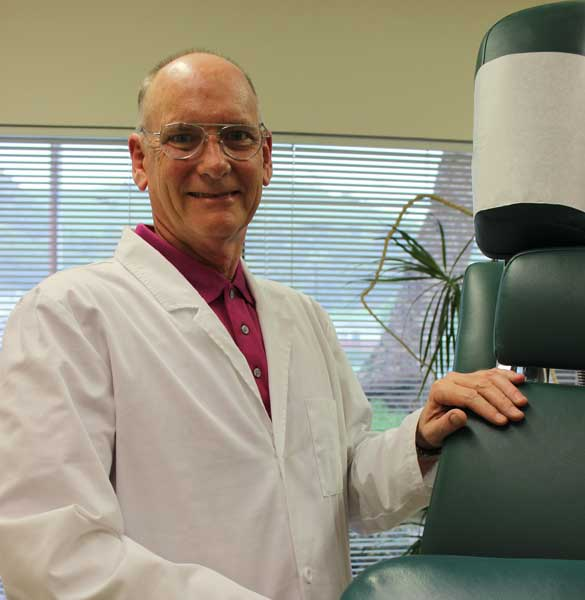

About Us
At Marin Family Chiropractic we provide the most advanced and effective treatment available utilizing a natural multidisciplinary approach. Our goal is to help our patients return to the active lifestyle they deserve.
Dr. Shaneyfelt specializes in the care and treatment of the musculoskeletal system using a holistic approach. This includes not only the spine but also its complex connections to the joints, muscles and tendons of the human body. Dr. Shaneyfelt has expertise in all phases of Chiropractic care including Sports Medicine, Geriatric and Pediatric Care. At Marin Family Chiropractic we create an atmosphere of compassion and professionalism with an emphasis upon your personalized care tailored to your specific health needs.
Dr. Shaneyfelt is uniquely qualified to help you with over 20 years of medical experience before becoming a Doctor of Chiropractic. This positions him to be able to diagnosis your health issue and determine the proper treatment options. Whether that involves referral to another qualified doctor or one of the many treatment protocols he has developed over the years The Doctor has developed treatment protocols for fast pain relief and long term corrective care so, you have a choice of which treatment option best fits your needs.
Did you know that the majority of musculoskeletal problems can be treated without surgery? Non surgical treatment can range from Chiropractic care to exercise. For example, many arthritic joints respond to Chiropractic Care, strengthening and dietary changes.
We want our patients to participate in the decision making process. You should be empowered with knowledge so you can make an informed decision about your health needs. Dr. Shaneyfelt incorporates this into each of your visit. So, don’t be surprised if you get quizzed by the Doctor. This is all designed to empower you with knowledge. With his many years of teaching seminars on health related issues he has learned to break down complex topics to simple understandable words and examples.
Make the decision now and let Dr. Shaneyfelt get you out of pain and onto the road to recovery.

About The Doctor
Prior to establishing a successful private practice in San Rafael, California in 1989, Dr. Shaneyfelt assisted in open heart research at the National Institute of Health in the late 70’s. He published a paper on “The Risk of Sudden Death and Aspirin: Its Effect and Protection from Sudden Death.” Dr. Shaneyfelt first experience in healthcare was at the Reither Healthcare Center in Seattle Washington specializing in the care and treatment of acephalic children and Thalidomide infants. Later in the 1970s he worked as a corpsman in the United States Air Force with emphasis in critical care and after Vietnam received licensure as a registered nurse with certification in critical care, running dialysis units and Intensive Care Units. During his time prior to chiropractic college he had experience in a cardiac catheterization laboratory and as neurosurgical assistant at University of California Los Angeles. Dr. Shaneyfelt is certified as a Mobile Intensive Care Nurse, Coronary Care Nurse, Advanced Cardiac Life Support Nurse, Respiratory Intensive Care Nurse, Mobile Acute Hemodialysis Nurse, Neonatal Intensive Care Unit, Diplomate in Clinical Nutrition, and Certified Clinical Nutritionist. From 1977-1981 he created a mobile acute hemodialysis network which function in the Southern California area.
Dr. Shaneyfelt graduated from Palmer College of Chiropractic – West in 1987 and later studied with Drs Mel Rees, George Goodheart, and Major DeJarnette. Due to his extensive past experience in emergency medicine and critical care he has incorporated DeJarnette Chiropractic First Aid into his practice. Dr. Shaneyfelt in the foremost authority on Chiropractic First Aid utilizing sacro occipital technique (SOT) and soft tissue orthopedic (STO) modalities.